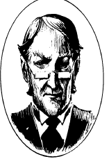

莫里亚蒂，詹姆斯教授
莫里亚蒂，詹姆斯教授（Moriarty, Professor James）
高等罗刹妖，守序邪恶
力量： 12
敏捷： 16
体质： 15
智力： 18
灵知： 16
魅力： 17
防御等级： -4
移动力： 15
等级/生命骰数：7
生命值：40
零级命中率：13
攻击次数：3
攻击/伤害：爪（1d3/1d3），咬（1d4+1）
特殊攻击：幻术，施法
特殊防御：只受+1武器伤害
魔法抗力：免疫8级以下的法术
战斗：詹姆士.莫里亚蒂（其真名无人知晓）用强力的幻术遮掩他的真面目——一个凶猛的虎头人。虽说他不喜欢参与实际战斗，更愿意把这些讨厌的工作甩给手下的大军，但战斗有时也无法避免。这种情况下，他的幻术能力足以让他在揭示真实形态并发起攻击前，相当程度地接近潜在的受害者。
莫里亚蒂还是一位魔法大师，能如同7级幻术师那样施展法术。他丰富的法术收藏保证他在几乎任何遭遇中都有适用的法术。
他的神秘本质使他免受普通武器的伤害，低于+3的附魔武器也只能对他造成一半的伤害。莫里亚蒂免疫一切不高于七级的法术。
莫里亚蒂离开了他的母国印度，因此来自印度的武器成了他的弱点。任何用源自印度的金属所制成箭头的箭或弩矢都能如+1武器那样伤害到他。用印度的银做刃的武器则如+3武器那样伤害他。一支用印度银做箭头的箭或弩矢，在受到印度的潜修者祝福后，只要蹭破皮肤，就能立刻杀死他。
巢穴：莫里亚蒂选择了伦敦某一处不显眼的建筑为家。从外面看，这栋房子是一座优良而体面的住宅；看上去毫无不寻常之处。在建筑内，没有任何幻术学派法术（除了莫里亚蒂自己的）能够生效。此外，这里的许多墙和门都是虚幻的。也就是说，莫里亚蒂能随意穿越或者移动它们。如果冒险者随手关门后，又想从同一扇门原路返回，他可能会发现这扇门通往了一个完全不同的房间。
背景：无数个世纪以来，罗刹妖一直荼毒着东南亚的人民。虽说数量稀少，但这些生物往往保持着对彼此的忠诚。它们合力推进恐怖的计划，将邪恶和腐化散播到它们生活过的任何地方。但对这些生物而言，最恶劣，最可憎的罪行莫过于背叛自己的同族。
在不列颠人来到印度的那段时间里，莫里亚蒂迷上了英国文化。他对英格兰的社会和历史所学越多，兴趣也就越深。离开印度前往探访不列颠帝国那遥远首都的欲望也因此变得不可抵挡。
虽说一开始莫里亚蒂觉得这个新的猎场很神奇，但不久之后，他就厌倦了这些奇怪的人民与他们陌生的生活方式。他发誓要回到印度。不过，他刚一回到孟买，就发现自己遭到了来自曾经与他称兄道弟的那些生物的追踪和攻击。既已离开罗刹妖之行列，这里就不欢迎他回来。
莫里亚蒂逃跑了，几乎仅以身免，跑回了英格兰。随着时光流逝，他开始将其他罗刹妖视为毫无理由就反对他的叛徒。他发誓绝不再跟罗刹妖扯上任何关系，还发誓要杀光每一个追踪他来到英格兰的罗刹妖。
几十年来，莫里亚蒂建构起了一个能在英格兰好好享受生活的假身份。他围绕自己组件了一个巨大的，视绝对忠诚为最重要品质的犯罪网络。而他的手下们都不知道主人的真面目。
近些年，莫里亚蒂和大侦探夏洛克.福尔摩斯成了对头。在他们最初的几次冲突之后，莫里亚蒂开始将福尔摩斯当做一位够格的敌手来尊重。不过，最近，他已经对福尔摩斯感到了厌倦，开始着手找些值得玩弄的新敌人。
